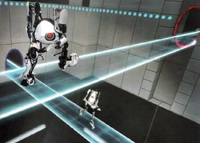
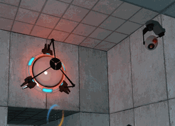

La física atraviesa portales invisibles.
En física, nada se pierde: la energía, el momento, la información... Como en Portal, cada entrada tiene una salida. Aprende cómo los principios de conservación gobiernan nuestro universo
See key conseptsLa energía impulsa todas nuestras actividades cotidianas: cocinar, movernos, comunicarnos y trabajar. Se transforma constantemente, permitiendo el funcionamiento de dispositivos, el transporte y los procesos biológicos esenciales para la vida.
Read More
La energía se manifiesta cuando aplicamos fuerza para mover objetos, como empujar una puerta o levantar una mochila, siguiendo la ley F=m\cdot a. Learn More

Cada vez que caminamos, nadamos o usamos herramientas, ejercemos fuerzas que generan reacciones opuestas, mostrando cómo la energía se distribuye en pares de interacción. Learn More

La energía gravitacional está presente en la caída de objetos, el peso corporal y el uso de balanzas, regulando cómo interactuamos con el espacio físico. Learn More

Al correr, frenar un vehículo o lanzar una pelota, la cantidad de movimiento (ímpetu) determina cómo se transfiere la energía entre cuerpos en movimiento. Learn More

Hablar, escuchar música o usar altavoces implica energía que se propaga en forma de ondas sonoras, transformando vibraciones en información. Learn More

La luz, el Wi-Fi y los rayos X son ejemplos de energía que viaja como ondas electromagnéticas, esenciales para la comunicación y la medicina. Learn More
![new1]()
Aparatos como cafeteras, licuadoras o refrigeradores convierten energía eléctrica en térmica, mecánica o luminosa para facilitar tareas diarias. Learn More

En procesos como cocinar o usar baterías, la energía no se crea ni se destruye, solo se transforma, respetando el principio de conservación. Learn More